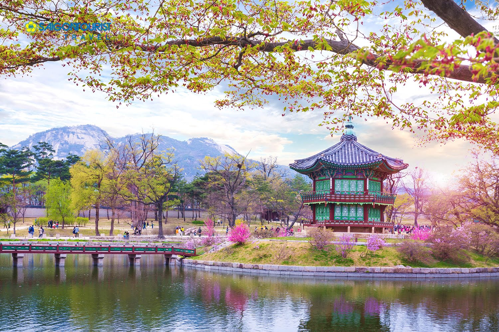
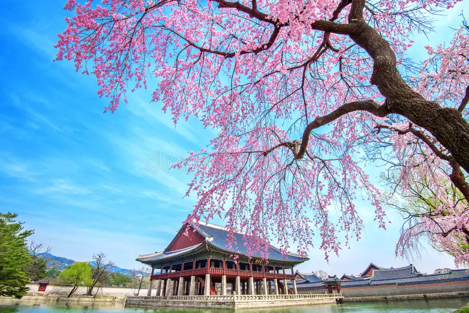
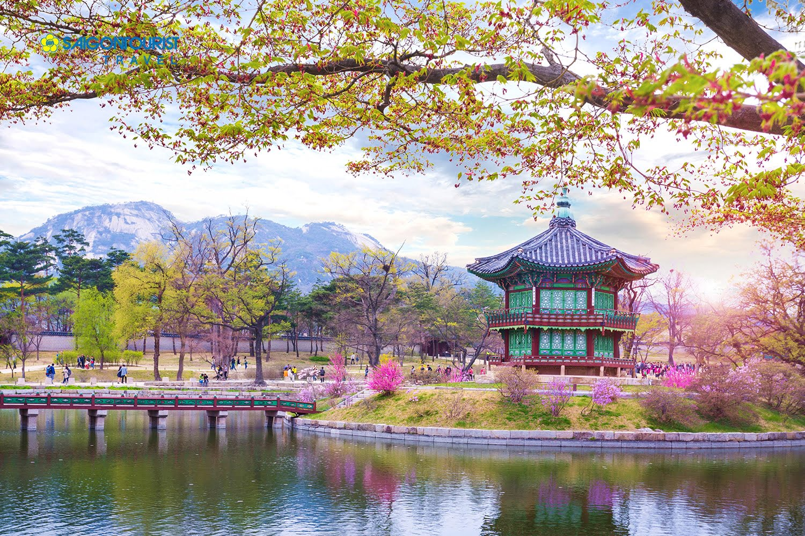
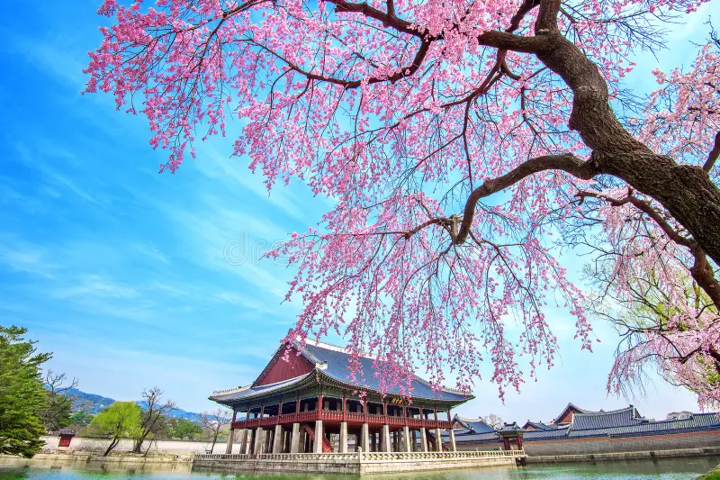

Vị trí: Thị trấn Sapa thuộc tỉnh Lào Cai, phía Tây Bắc Việt Nam, cách thành phố Hà Nội 350 km về phía Tây Bắc, sát biên giới với Trung Quốc.
Nhiệt độ: Khoảng 10-20 độ C
Đặc sản:
- Cái sàn: Một loại thực phẩm chế biến từ thịt lợn, bò hoặc dê, thường được nướng hoặc xông khói.
- Rau mùi tây Sa Pa: Một loại rau mùi tây có hương vị đặc trưng của vùng núi.
Giới thiệu:
Sapa - Thiên đường mùa xuân tại Việt Nam, nằm giữa vùng núi phía Bắc, là điểm đến lý tưởng cho những người muốn trải nghiệm vẻ đẹp tinh khôi và thanh bình của mùa xuân. Với những cánh đồng hoa đào hồng tươi tắn, mùa xuân Sapa quyến rũ du khách bằng khung cảnh hùng vĩ của núi rừng, đồng cỏ xanh mướt và những ngôi làng dân dụ tự nhiên.
Trong mùa này, Sapa chìm đắm trong không khí tươi mới của những bông hoa anh đào bung nở, tô điểm cho bức tranh thiên nhiên huyền bí. Du khách sẽ được đắm chìm trong sự yên bình, tận hưởng không gian thanh lịch của các homestay ven đồi, và thưởng thức ẩm thực độc đáo với các món ngon của người dân bản địa.
Mùa xuân Sapa không chỉ là cơ hội để tận hưởng khí trời tuyệt vời, mà còn là thời điểm lý tưởng để khám phá văn hóa dân dụ độc đáo và tham gia vào các hoạt động trải nghiệm, như đi trekking qua các ngôi làng sắc màu hay thăm các thác nước hùng vĩ.